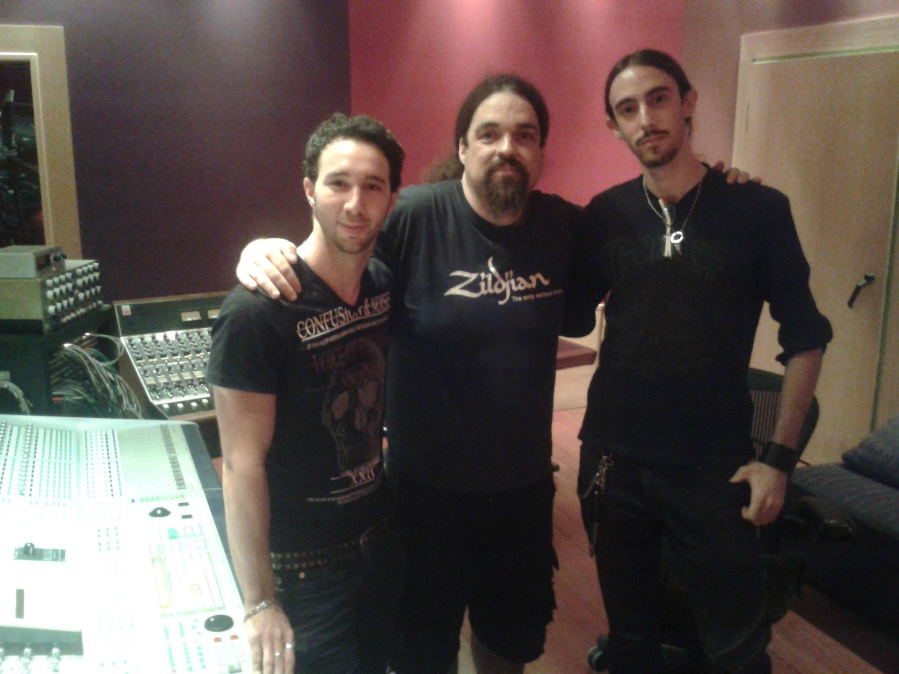
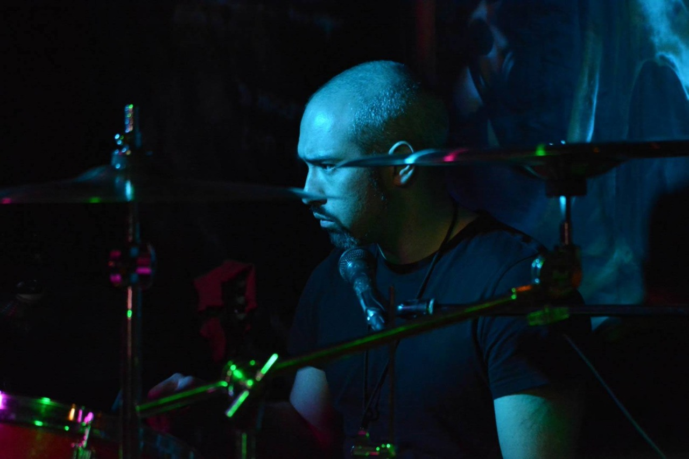

Alfred Berengena · Diego Morales “Kaen”

Alfred Berengena es un reconocido baterista español que participó en IN VERSO durante su fase de grabaciones de estudio, contribuyendo con su técnica profesional al álbum debut de la banda.
Fue el encargado de la batería en las grabaciones del álbum «Corvux Corax» (2013), realizado en el PKO Studio de Madrid bajo la dirección de Emilio Mercader. Su aportación fue clave para definir el sonido del disco, equilibrando la crudeza del death metal con los elementos melódicos y progresivos característicos de la banda.
Alfred Berengena cuenta con una trayectoria extensa en la escena del metal español. Ha sido miembro de S.A. (Soziedad Alkoholika) y colaborador en proyectos como Mistweaver.
Además, es instructor de batería, impartiendo cursos online y clases presenciales en Girona, consolidándose como una figura destacada tanto en la ejecución como en la enseñanza del instrumento.

Diego Morales, conocido artísticamente como “Kaen”, fue el baterista responsable de las presentaciones en vivo de IN VERSO, sustituyendo a Alfred Berengena en los conciertos de la banda.
Participó como baterista de directo entre 2013 y el final de la banda, aportando técnica, energía y precisión a las actuaciones. Su papel refleja una estructura habitual en bandas de metal: un baterista especializado en estudio (Berengena) y otro dedicado a los directos (Morales).
Diego Morales, nacido el 14 de julio de 1981, cuenta con una sólida trayectoria en la escena del metal español. Aunque sus créditos más destacados en bases de datos internacionales como Encyclopaedia Metallum se centran en IN VERSO, ha sido un músico activo en la escena madrileña, demostrando la técnica necesaria para sostener composiciones progresivas y exigentes.
La separación de roles entre Berengena (grabaciones) y Morales (directo) responde a una práctica profesionalizada común en bandas de metal progresivo y death metal. Ambos bateristas contribuyeron de forma complementaria a la identidad sonora de IN VERSO durante su actividad entre 2010 y 2016.